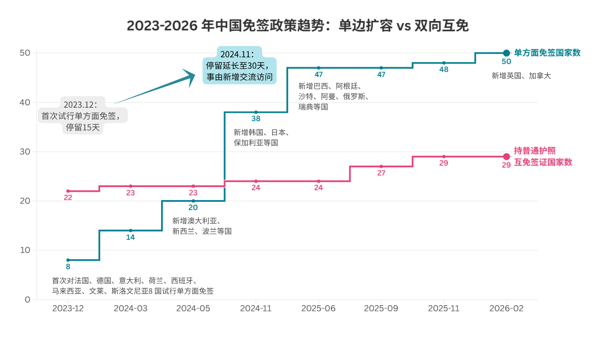
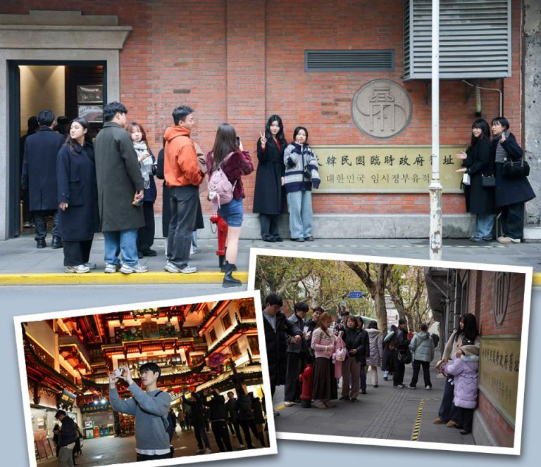
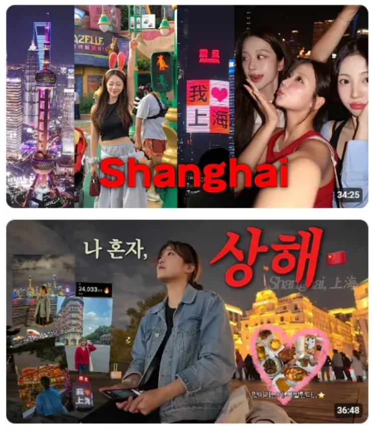
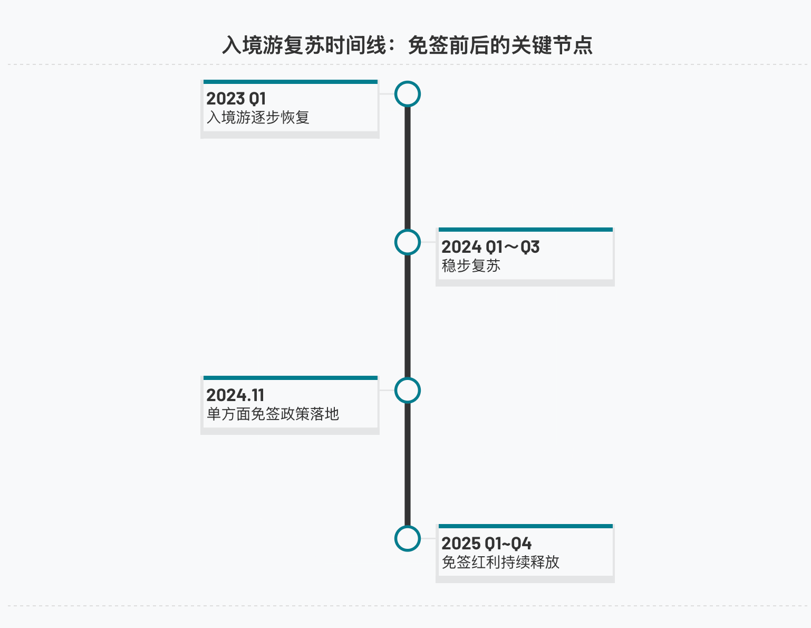
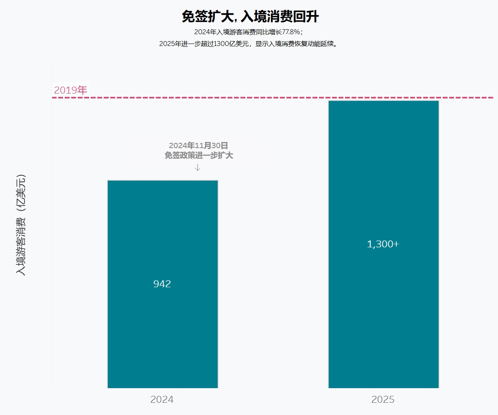

据国家移民管理局、外交部最新官方数据，截至2026年2月17日，中国单方面免签政策已覆盖50个国家，持普通护照人员可免签来华旅游、商务、探亲等，停留最长可达30天，政策整体有效期至2026年12月31日。与此同时，中外普通护照互免签证协定也在同步扩容。截至2026年4月18日，中国已与29个国家达成双向互免签证安排，双方公民可持普通护照自由往来，实现真正的双向便利。
在政策持续开放的带动下，“ChinaTravel”持续火爆，免签政策成为拉动入境旅游复苏与增长的重要引擎。
从2023年底至今，中国单方面免签政策进入密集的开放周期，免签国家数量持续扩容、停留时长不断延长、入境流程持续简化，构成了一条清晰的对外开放时间线。

2023年12月1日，中国对法国、德国、意大利等8国试行单方面免签，停留15天，正式开启大规模入境便利化；同期互免签证国家保持22国存量基础。2024年单方面免签加速扩容，年内两度扩围至38国，并统一延长停留至30天；同年互免签证新增新加坡、泰国，总数升至24国。
2025年单方面免签覆盖南美、中东等主要客源地，年末达48国；互免签证同步新增5国，总数增至29国。2026年2月，单方面免签再添英国、加拿大至50国，互免签证保持29国稳定，形成入境便利化“双轮驱动”格局。
值得关注的是，政策优化不止于“数量”，更在“细节”：过境免签从2023年的72小时、144小时两档，统一延长至240小时（10天），且允许跨省停留，北京、上海、广州等口岸还推出“免采指纹、免盖验讫章”的快速通关服务，为外国入境游客带来便捷。
从“15天停留”到“30天免签”，从“欧洲聚焦”到“全球覆盖”，从单方面开放到双向互免协同推进，中国入境免签政策的每一步调整，都在缩短世界与中国的距离。而随着2026年加拿大、英国等国免签政策的落地，这场“开放答卷”还将写下新的篇章。
数据来源：国家移民管理局、中华人民共和国外交部、权威媒体公开报道（截至 2026 年 4 月）
免签政策如何重塑中国入境游版图？
—— 突然之间，上海街头听到的都是韩语？
当一项宏观政策落地，它最先改变的不是报表上的数字，而是街头巷尾的风景。从⼀杯武康路的咖啡，到外滩的快门声，⼀场由“免签”引发的⼊境游热潮，正悄然改变中国城市的日与夜。

上海街头，韩国游客在历史遗迹与热门商圈络绎不绝。
错置的时空，首尔“平移”上海？
如果你周末漫步在上海的武康路或安福路，闭上眼睛仔细听，你可能会有那么一瞬间的错觉——自己是不是瞬移到了首尔的弘大或梨泰院？
这并非夸张。
过去的一年里，上海的网红街区、历史建筑甚至弄堂深处，突然涌入了大量操着韩语的年轻面孔。他们拿着相机，跟随着社交媒体上的攻略，精准地打卡每一家精品咖啡馆与传统小吃。
在韩国的社群平台 Instagram 和 YouTube 上，带有 #상하이여행（上海旅行）标签的近期贴文正在以惊人的速度裂变。“免签”、“外滩”、“咖啡厅”、“City Walk”成为了最高频的讨论词汇。
上海，这个距离首尔仅需不到两小时航程的城市，正成为韩国年轻人周末微度假的“新顶流”。

韩国社交媒体上关于“上海旅行”的Vlog与打卡照呈现井喷式增长。
社交媒体上的狂欢或许会带来“幸存者偏差”，但当我们将目光转向出入境与旅游平台的硬核数据时，这个现象得到了无可辩驳的印证。
这一切的“拐点”，精准地落在了另一个时间刻度上：
2024年11月——中国正式对韩国实施单方面免签政策。
这项政策的威力有多大？它不仅仅是省去了几百元的签证费和繁琐的办理时间，更打破了心理上的出行壁垒，将一场跨国旅行的决策成本降到了与“国内跨省游”同等的水平。
让我们来看一组令人惊叹的对比数据：
免签政策升级后的上海出入境：韩国游客与其他外国游客数量变化
可点击下方左侧滑动开关查看变化
如数据所示，在免签政策实施后，韩国游客入境量呈现以下特征：
- 1. 爆发式增长：韩国游客人数从 44.65 万人次飙升至 90.91 万人次，增长率高达惊人的 +103.61%。
- 2. 断层式领先：相比于同期其他外国游客 50.00% 的整体增长率，韩国游客的增幅展现出了压倒性的优势，一跃成为客源国的 Top 1。
数据来源：上海市人民政府
免签之后，入境潮真的来了吗？
2024年11月，中国对韩国、日本、欧盟等多国实施单方面免签政策的消息刷屏全网。社交媒体上，韩国博主的上海旅游vlog层出不穷。但这场被称为“免签红利”的热潮，到底是真实的客流反弹，还是一场流量狂欢？我们用2023-2025年的季度入境数据，还原这场热潮的真实模样。
从2023年至今的季度数据来看，中国入境游的复苏曲线，远比社交媒体上“免签爆火”的叙事更有层次感。
2023 年，随着出境限制全面放开，外国游客入境规模经历了一波强势反弹：从一季度的 168.8 万人起步，一路攀升，在四季度达到 805.2 万人的阶段性高点，几乎是年初的五倍，清晰展现了积压已久的旅行需求的释放。进入 2024 年，市场增速明显放缓，进入了更稳健的修复阶段：虽然一季度出现季节性回落，但随后几个季度基本保持在 800 万人上下，没有出现大起大落。
从同比增速来看，也能印证这一点。2024 年上半年高达 200% 以上的同比增速，更多是低基数带来的恢复性反弹；而免签政策落地后，增速虽然回落至 20% 左右，但始终保持稳定的正增长，说明复苏已经从 “报复性反弹” 转向了更健康、可持续的增长。进入 2025 年，政策红利开始真正显现，入境人数一路走高，在四季度达到 1192.4 万人，创下近三年新高，也给这场关于 “免签红利” 的讨论，交出了更扎实的答卷。
最低谷 (2023 Q1)
168.8万人
免签当季 (2024 Q4)
960.1万人
最高峰 (2025 Q4)
1192.4万人
数据说明
1. 入境人数折算：外国人入境人次根据 “出入境人次 ÷2” 的通用行业方法折算。
2. 估算数据说明：2023 年 Q1、Q2 数据基于上半年累计数据按旺季比例拆分。
很多人关心的免签政策，其效果在数据上并非立竿见影。2024 年 11 月，中国对多国实施单方面免签，但政策落地后的第四季度，入境人数并未迎来预期中的井喷，反而从三季度的 823.1 万人微降至 960.1 万人。这种 “政策热、数据冷” 的反差，其实有很现实的原因：
点击查看解读
第一，政策生效时间点的影响。免签政策从 11 月 10 日起实施，整个第四季度里，真正享受到免签便利的只有 11 月和 12 月两个月。政策红利被 10 月的非免签数据 “平均” 了。
第二，季节性因素的叠加。每年第四季度都是北半球的旅游淡季。往年同期的入境数据都会出现不同程度的下滑，而今年的降幅明显收窄，说明免签政策已经在淡季里起到了 “托底” 的作用。
第三，游客决策的滞后效应。大多数国际游客的旅行计划需要提前 1-3 个月预订。因此，政策带来的客流增长，更多会在 2025 年一季度及之后才集中释放。

数据来源：国家移民管理局 2023-2025 年季度、上半年、三季度、全年出入境数据、免签入境专项数据
免签政策并未带来短期 “暴涨”，但带来了更稳定、更可持续的复苏。入境潮不是瞬间到来，而是逐步走强。
哪些城市接住了免签红利？
全国多地免签政策红利全面释放 ，2024-2025年，我国持续优化外国人过境、入境免签政策，北京、上海两大枢纽城市入境外国客源流向发生显著变化。
在北京、上海两地，中方单方面免签的韩国、日本入境人数迎来跨越式飙升，韩国入境上海人数一年间近乎翻倍增长；2025年9月新增互免签证的俄罗斯，两地入境客流均大幅走高；泰国、马来西亚双边互免签证持续发力，入境规模稳步攀升；而暂无免签便利的美国，入境客流走势整体平稳，增长动力明显弱于免签客源国。
免签红利正在全国多点开花：广州2025年超158万外籍旅客依托各类免签政策入境，占全年外籍入境总人数半数，当地240小时过境免签受益人次同比暴涨122%；海南依托自贸港免签优势，俄罗斯客源爆发式增长，全年接待俄罗斯游客突破50万人次，同比增幅超120%。
数据来源：上海市文旅局、北京市文化和旅游局、广州市人民政府、三亚市人民政府
一系列签证便利化举措，正在持续拉动跨境文旅复苏，重塑我国入境旅游客源格局。
从客流回升到消费修复：免签红利如何进入城市经济
入境消费回升，但修复仍未完成

随着免签政策扩围、国际航线恢复和支付便利化措施持续推进，中国入境旅游消费正在加快回升。商务部数据显示，2024年入境游客总花费约942亿美元，同比增长77.8%。尽管这一规模仍低于2019年水平，但2024年以来的恢复势头已经较为明显。2025年相关数据若继续接近或超过2019年基准，将意味着入境消费不仅完成疫后修复，也重新成为国内旅游消费增长的重要增量来源。
支付便利化重塑外国游客的消费半径
支付便利化成为入境消费回升的重要基础设施。中国人民银行数据显示，2024年上半年，超过500万入境人员使用移动支付，交易9000多万笔、金额140多亿元，均同比增长4倍。通过“外卡内绑”和“外包内用”，外国游客可以将境外银行卡绑定中国支付App，或直接使用境外电子钱包在中国商户付款。支付环节变顺畅后，消费也更容易从景区、酒店和大型商场延伸到餐饮、交通、街区商户等日常场景。
离境退税显示城市购物承接能力差异
以离境退税为观察窗口，2025年“五一”期间，北京、上海、广州、深圳离境退税商品销售额均同比增长，其中深圳增幅最突出。《中国税务报》数据显示，深圳同比增长6.7倍，上海增长1.5倍，广州增长86.33%，北京增长73%。深圳的高增幅与口岸优势、香港及粤港澳大湾区高频跨境客流、退税便利化有关，也受到外籍人员入境增长带动。央视网援引深圳边检总站数据称，截至2025年5月19日，深圳边检总站查验免签入境外国人56万人次，同比增长105%。
城市画像浮现：住宿、餐饮与购物各有重心
入境消费的恢复不能只用购物数据来衡量。线下到店刷卡样本显示，外国游客的支出分布在住宿、餐饮、购物、文旅体验等多个城市消费场景中。北京、上海更偏综合型消费，深圳、广州受益于口岸流动和购物退税，成都、杭州则更多体现出目的地体验消费的吸引力。
停留时间拉长，消费场景可能随之延伸
游客停留时间的变化也为消费恢复提供了另一层解释。世界旅游联盟、万事达卡、携程集团和蚂蚁集团联合发布的《跨境旅游消费趋势报告2023–2024》显示，基于携程集团匿名聚合入境预订数据，2024年样本中，7—14天和14—30天停留比例较2019年有所提高，而2天以内短停留比例下降。这说明，在平台样本中，部分入境游客正从短暂停留转向更长周期的深度旅行。
尽管停留时间拉长并不直接等同于消费金额上升，但它增加了游客接触本地消费场景的机会。相比短期观光，7天以上停留更可能带来连续住宿、多次餐饮、城市交通、本地体验、购物和跨城市移动等消费行为。因此，入境旅游消费回升的背后，不只是游客数量恢复，也包括支付环境改善、城市服务能力提升、消费场景扩展和旅行方式变化等多重因素。
数据来源：文化和旅游部、商务部、国家税务总局广东省税务局、新华社、央视网、《跨境旅游消费趋势报告2023–2024》
结语
从“流量狂欢”到“留量深耕”，免签重塑的不仅是旅游版图
社交媒体上的“China Travel”热潮，为我们勾勒了一个极具视觉冲击力的开局；但跳出算法的滤镜，出入境与消费数据的沉淀，才真正揭示了这场“免签红利”的底层逻辑。
数据告诉我们，入境游的复苏并非一蹴而就的井喷，而是一场伴随着决策滞后与季节性波动的稳健爬坡。更重要的是，“免签”带来的绝不仅仅是通关人数的绝对值增长，而是游客结构的实质性重塑：他们停留的时间在拉长，消费的触角正从单一的酒店住宿，逐渐延伸至商场零售与城市街巷深处。外国游客对中国的期待，正在从走马观花的“打卡”，转变为沉浸式的“体验”。他们愿意花更多的时间，去感受一个真实、具体且充满活力的中国经济微循环。北京的餐饮、成都的购物、杭州的住宿，也映射出中国城市在承接国际客流时，正呈现出各具魅力的差异化图景。
随着2026年免签朋友圈的继续扩容，政策层面的“破壁”已初见成效。不过对于各大城市而言，真正的考验才刚刚开始。随着免签政策不断升级， 越来越多的外国游客会来到中国，如何用更完善的多语种标识、更便利的支付基建、更具本地特色的消费场景，将这波“流量”转化为长效的经济“留量”？这不仅是一道突如其来的旅游题，也将会是一份关乎城市综合竞争力的开放答卷。